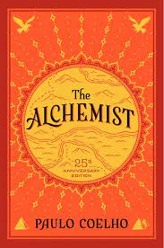
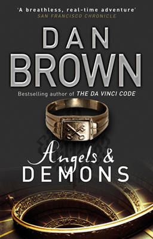

The Kite Runner

Khaled Hossenini
Khaled Hosseini is an Afghan-American novelist and UNHCR goodwill ambassador. His debut novel The Kite Runner was a critical and commercial success; the book, as well as his subsequent novels, have all been at least partially set in Afghanistan and have featured an Afghan as the protagonist.
The God Small Things

Arundhati Roy
Suzanna Arundhati Roy is an Indian author best known for her novel The God of Small Things, which won the Man Booker Prize for Fiction in 1997 and became the best-selling book by a non-expatriate Indian author. She is also a political activist involved in human rights and environmental causes
The Alchemist

Paulo Coelho
Paulo Coelho de Souza is a Brazilian lyricist and novelist. He is a member of the Brazilian Academy of Letters. His novel The Alchemist has sold more than 150 million copies worldwide and is the all-time best-selling book by a Brazilian writer.journalist and theatre director before pursuing writing careier.
Dan Brown

Angels and Demons
Daniel Gerhard Brown is an American author best known for his thriller novels, including the Robert Langdon novels Angels & Demons, The Da Vinci Code, The Lost Symbol, Inferno, and Origin. His novels are treasure hunts which usually take place over a period of 24 hours.A film adaptation was released on May15,2009